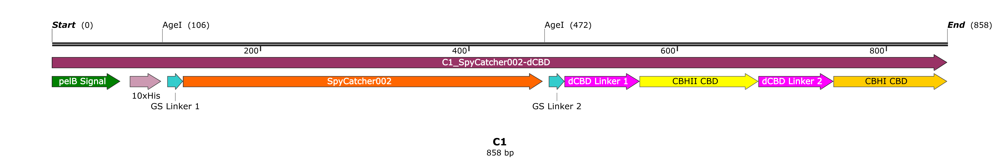
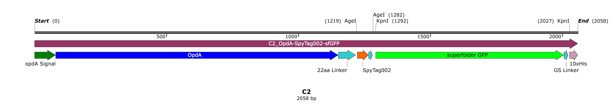

The very first question every iGEM team needs to answer is what their project should be about. Our goal was not only to participate successfully in the iGEM competition but to give something back to both the synthetic biology community and our local community. Organophosphate (OP) pollution is a major issue not only in India but also all over the globe. This inspired us to focus on the degradation of organophosphates by implementation of synthetic biology. Our approach does not suggest that OP pollution should continue, but it offers an environmentally friendly way to fight the existing OP-polluted water.
The proteins with which we intend to functionalize the bacterial cellulose (BC) filter should meet three functional aspects:
It must attach to the BC substratum strongly enough that it does not get washed away with the flow of water
It must catalytically degrade harmful organophosphate molecules into relatively harmless chemicals which can be easily separated from the water sample (say, with help of some physical process).
It must be modular so that other teams in future can design some other bioremediation process (for example, addressing organochlorine pollution) simply by doing a minor change to our filtering platform.
These criteria were enough to convince us on designing fusion proteins in order to achieve our goal. Our endeavours yielded blueprints of two fusion proteins, namely C1 and C2.
The fusion protein that C1 codes for is essentially the docking module.
The N-terminal has a well-characterized pelB leader sequence (19 amino acid long) which helps the protein to get exported to the periplasmic space of Gram-negative bacteria (often used in genetic engineering) via Sec translocation pathway. After aiding in secretion, the signal is removed by a signal peptidase present in the periplasm.
The signal peptide is followed by 10x-Histidine (10x-His) tag which can later be used to extract (as well as purify) the protein using lighter transition metal-based affinity columns. The 10x-His tag was chosen instead of the traditional 6x-His tag as the former conveys increased binding affinity for Ni resin and higher extent of purification compared to the latter
The 10x-His tag is followed by SpyCatcher002. SpyCatcher002 is separated from 10x-His tag by the GS Linker 1 so that these two do not interfere with each other's function. SpyCatcher002 is followed by dCBD. These two are separated by GS Linker 2 (reason same as previous instance). dCBD or double cellulose binding domain is a fusion of 2 different CBDs of cellobiohydrolases found in Trichoderma reesei. It was chosen as its binding to microcrystalline cellulose is synergistic. Thus, its binding efficiency to cellulose is much higher than single (typical) CBDs. Also, binding is relatively unaltered by changes in time and temperature. The two CBDs are denoted as CBHII CBD and CBHI CBD. dCBD comes with linker between CBHI CBD and CBHII CBD, so we did not have to add any extra linker sequence with it.
The fusion protein that C2 codes for is essentially the functional module.
The N-terminal features the organophosphate hydrolase OpdA along with its signal peptide (i.e. opdA leader sequence). OpdA is a phosphotriesterase from Agrobacterium radiobacter P230 with broad substrate range (e.g. coumaphos, coroxon, parathion, diazinon, dMUP etc.). We noticed in literature that the specificity constant of OpdA is much higher than that of OPH (a well-studied and similar enzyme from Pseudomonas diminuta), in context of parathion-methyl degradation. As mentioned in the "Background" page, parathion-methyl was the second most consumed OP insecticide used over the 2005-2010 period in India and it belongs to the most dreaded Class Ia! Thus, OpdA was chosen instead of the more popular counterpart OPH.
SpyTag002 follows OpdA, followed by a 22 amino acid-long linker. Instead of designing OpdA-SpyCatcher002 fusion and SpyTag002-dCBD fusion, we have gone for OpdA- SpyTag002 and SpyCatcher002-dCBD. SpyTag002 is much shorter than SpyCatcher002, and thus the former is less likely to interfere with the activity of OpdA than the latter.
SpyTag002 is followed by a short GS linker, and then a superfolder green fluorescent protein (i.e. sfGFP). It is a basic (i.e. constitutively fluorescent) GFP derived from Aequorea victoria with excitation wavelength of 485 nm, and emission wavelength of 510 nm. It was added to C2 construct as it would facilitate the quantification of fusion protein expression and would help detecting the degree of success of post-hoc functionalization process.
This sfGFP is followed by another short GS linker and then 10x-His tag (same purpose as mentioned previously).
Bacterial cellulose (BC) is the ideal eco-friendly, biodegradable, durable base for the filter we seek to build. It is chemically pure, containing no hemicellulose, pectin, wax, or lignin. In spite of possessing high tensile strength, it is flexible. It is more crystalline compared to plant-derived
cellulose, so usage of dCBD yields more benefit when used in conjunction with BC. Also, BC production is not directly dependent on trees. The cellulose microfibrils of BC are significantly smaller than those of plant cellulose, making BC much more porous. Thus, post-hoc functionalization is more effective for BC than plant cellulose. BC-producing bacteria produce cellulose as pellicles which, when still wet, can easily be disintegrated into loose nanofibrils. However, one cannot produce nanofibrils from phytocellulose without a cumbersome homogenization process.
We plan to utilize BC-producing bacteria to obtain BC pellicles. These can be mechanically disintegrated into loose nanofibrils. The randomly aligned BC nanofibrils can be easily oriented to get a sheet if a stress is applied to those while drying.
Since the chemical composition of BC is similar to phytocellulose, it can also be carboxymethylated, acetylated, phosphorylated, and modified by other graft copolymerization and crosslinking reaction to obtain a series of BC derivatives. The introduction of new functional groups to the BC structure can endow BC with superior mechanical properties or/and stability against ready microbial degradation, while maintaining the unique three-dimensional nano network and porous structure.
Then, we plan to incubate the BC sheet and the fusion proteins (i.e. both C1 and C2) together in order to make the OP-degrading filter material.
We have used pETMCN-T7 (KanR) vector, because it has a high copy number and transcription using the T7 RNA polymerase can be strongly induced upon addition of IPTG (i.e. isopropyl \(\beta\)-D-1-thiogalactopyranoside). Also, the pET vector system is a powerful and widely used system for expressing recombinant proteins in E. coli, a well-characterized and reliable chassis. A powerful feature of the pET system is the ability to clone target gene under conditions of extremely low transcriptional activity, that is, in the absence of a source of T7 RNA polymerase. Background expression is minimal in the absence of T7 RNA polymerase because the host RNA polymerases do not initiate from T7 promoters and the cloning sites in pET plasmids are in regions weakly transcribed (if at all) by read-through activity of bacterial RNA polymerase.
Target genes are initially cloned into the vector using hosts that do not contain the T7 RNA polymerase gene, thus eliminating plasmid instability due to the production of proteins potentially toxic to the host cell. We have chosen E. coli DH5\(\alpha\) as the host for cloning and plasmid amplification. It lacks T7 RNA polymerase gene, is recA- endA-, and gives high transformation efficiencies as well as good plasmid yields.
We have chosen E. coli BL21(DE3) as the host for expression. This strain is a lysogen of bacteriophage DE3, a lambda derivative that has the immunity region of phage 21 and carries a DNA fragment containing the lacI gene, the lacUV5 promoter (inducible by IPTG), and a chromosomal copy of the gene for T7 RNA polymerase. As an E. coli B strain, BL21 is deficient in the lon protease and lacks the OmpT outer membrane protease that can degrade proteins during purification.
Some of the proteins coded by the sequences designed by us are native to organisms other than E. coli, our chassis. Thus, we have codon optimized the nucleotide sequences (e.g. SpyTag002, SpyCatcher002, OpdA, dCBD, linkers) for E. coli by using the 'Choose Alternative Codons' capability and codon usage tables available in SnapGene while designing the constructs.
As discussed earlier, modularity is our key to building a plug-n-play bioremediation platform. It is an indispensable aspect of synthetic biology as well. We have incorporated the SpyTag/SpyCatcher technology, also termed "molecular superglue", in our design of the fusion proteins (i.e. C1 and C2) in order to ensure modularity. This is a technology for irreversible conjugation of recombinant proteins. The peptide SpyTag spontaneously reacts, both autocatalytically and quantitatively, with the protein SpyCatcher to form an intermolecular isopeptide bond (a covalent bond) between the pair. We have used SpyTag002/SpyCatcher002 instead of the original SpyTag001/SpyCatcher001, as the former is a second-generation, faster-reacting version of this protein superglue at cellular expression levels. We have not used the latest SpyTag003/SpyCatcher003 system because it already exists in the iGEM Registry of Standard Biological Parts. Thus, we intend to submit this codon optimized SpyTag002/SpyCatcher002 system in the iGEM Registry as a contribution from our side to the synthetic biology community.
Proteins to bind or degrade a limitless range of contaminants can be bound to cellulose membranes. In that sense, our filtration platform is inherently modular, thanks to SpyTag002/SpyCatcher002 system. If some future group of workers intend to construct a filter to address some pollution other than organophosphate pollution, they would have to replace the OpdA part of C2 with their enzyme of interest. This modified construct would still be compatible with C1 designed by us. That modified C2 and original C1 would together constitute a system to neutralize that other pollution. We specifically encourage the future iGEM teams interested in bioremediation to adopt this strategy and to add to this novel plug-n-play toolbox through their invaluable efforts as well as boundless creativity.
Gibson assembly allows for successful assembly of multiple DNA fragments in a single-tube reaction, regardless of fr for large DNA constructs. It enables directional cloning, is very rapid and efficient. Most importantly, it is a seamless method and does not yield any scars. Scars are detrimental to the proper functioning of fusion proteins, the very foundation of CellOPHane. Thus, we have used this elegant cloning technique.
Down the road, we seek to build a functional, cost-effective, reliable filtration device which can be installed in the regions where waterbodies are plagued with organophosphate pollution. The basic idea is to coat the inner surface (bore) of microchannels with the functionalized filter material we plan to manufacture, and then to pass the water polluted with OP through an array of these coated microchannels. We depend on principles of hydrodynamics and microfluidics to come up with microchannels of specific shape(s) that ensure adequate residence time of OP molecules inside the channel, so that the OpdA molecules get sufficient time to act upon those.
Once we are ready with the prototype of our Open-source Hardware (OSH), we intend to proceed for its licensing and release into the SynBio community.